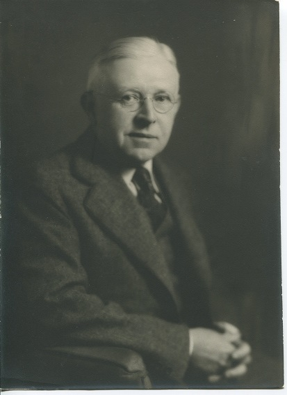

West Overton was a small Mennonite community located in Westmoreland County, Pennsylvania
that today is the location of [West
Overton Village and Museums](https://www.westovertonvillage.org/), a museum displaying the history and
accomplishments of the people who lived there. The first family to settle in this
village where the Overholts led by Henry Kolb Overholt. They were a Mennonite family of
German-Swiss heritage and Anabaptist religious roots. Henry Kolb's son Abraham began
distilling and selling whiskey in the early nineteenth century, resulting in the
Overholts becoming very wealthy. The focus of this project is a diary written by Karl
Frick Overholt, one of the great-grandsons of Abraham Overholt. The contents of this
diary include family stories, ancestry trees, diagrams, and newspaper clippings, among
other things, making it an invaluable resource to the museum and interesting to analyze.
